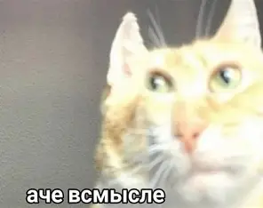
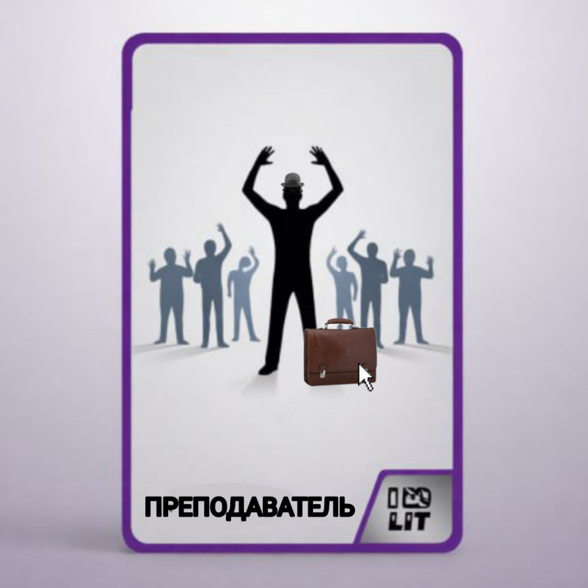
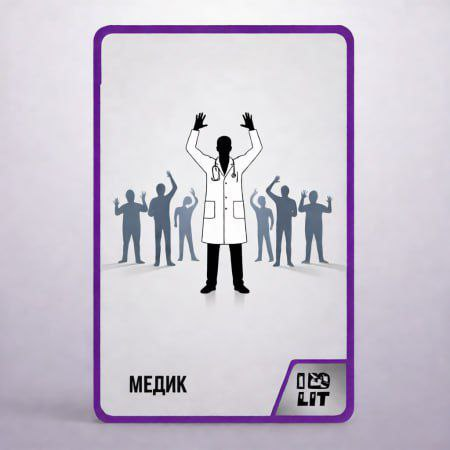
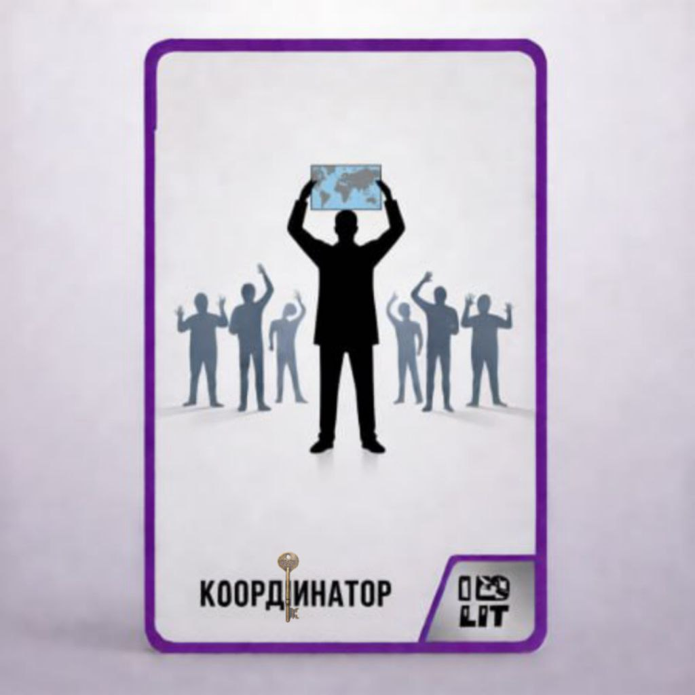
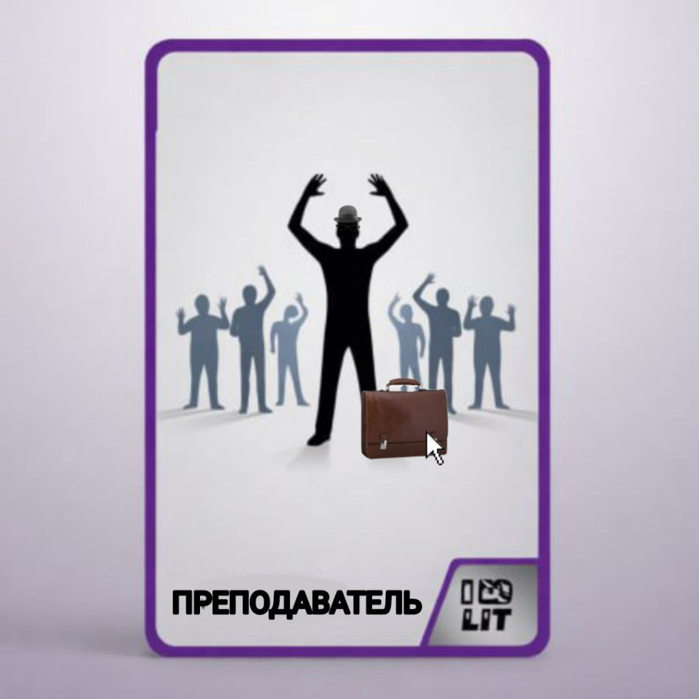
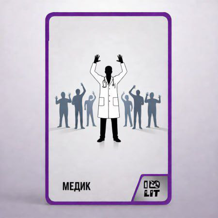
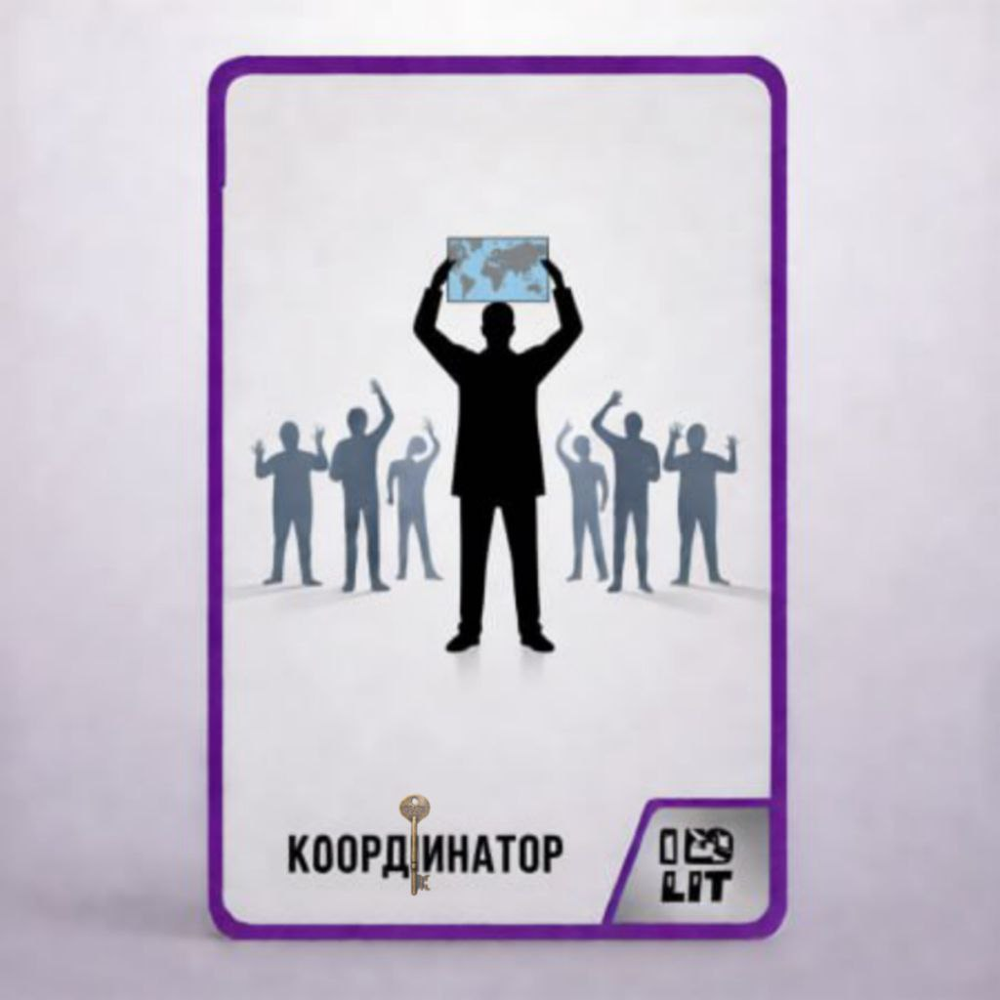
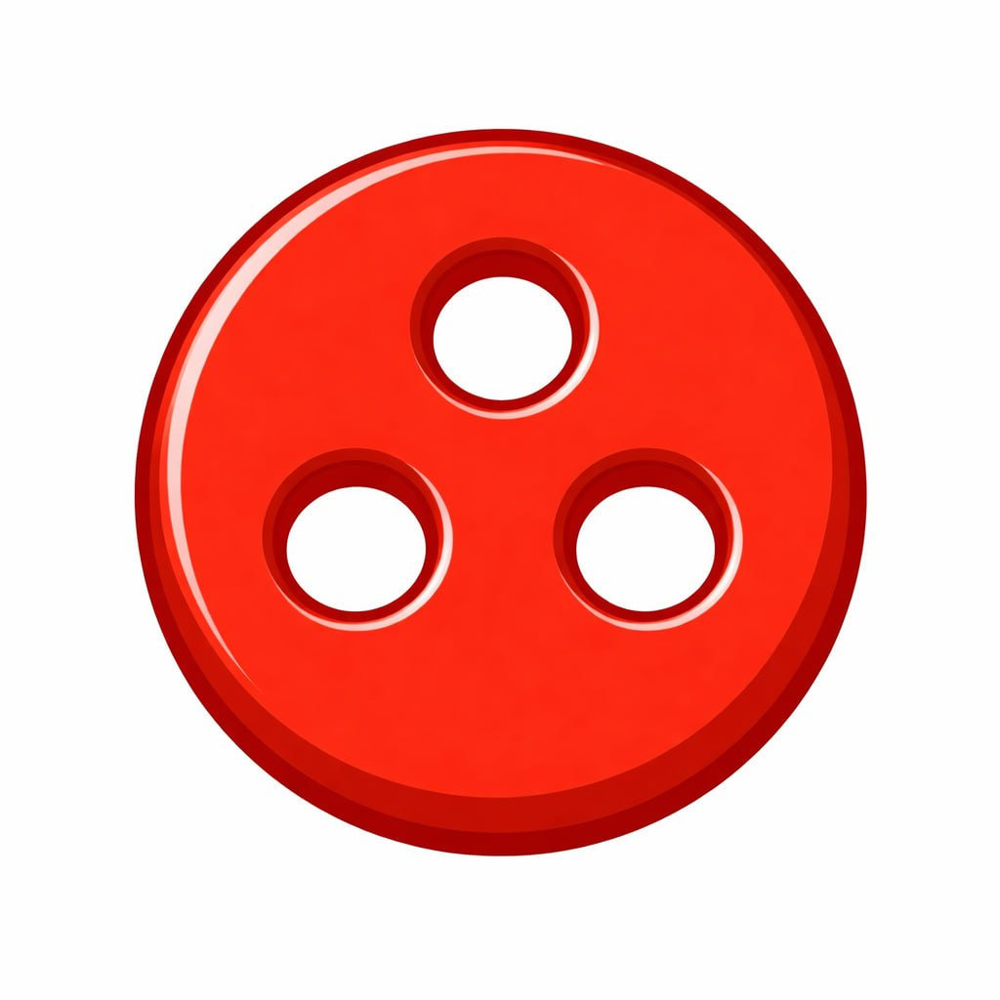
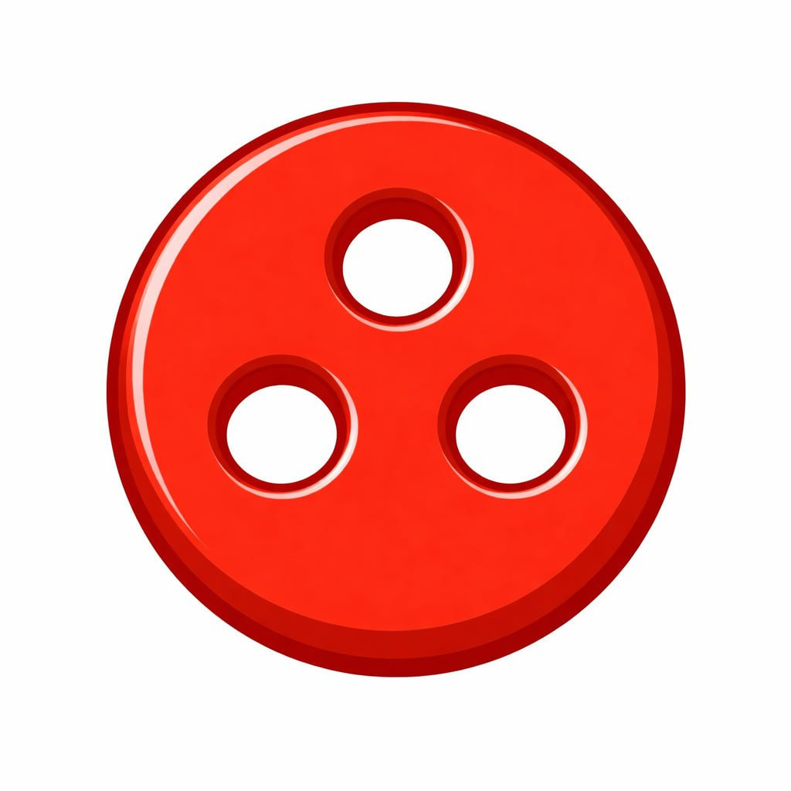

Игра "Атака с воздуха"
Правила игры
Цель игры
Игроки совместно должны правильно отреагировать на воздушную угрозу, действуя по инструкциям безопасности, сохраняя спокойствие, помогая окружающим и не допуская опасных решений.

Участники
- Количество игроков: 4–5
- Ведущий: 1 (не участвует в принятии решений, только оценивает)
Комплект игры
- Карта-схема корпуса
- Карточки ролей (5 шт)
- Колода карточек событий
- Колода карточек действий
- Фишки готовности (зеленые)
- Фишки риска (красные)
- Фишки NPC (5 шт)
- Памятка для ведущего
Староста группы — снижает стресс и панику, помогает при массовом беспокойстве.
Преподаватель — даёт чёткие команды, ускоряет принятие решений.
Медик — помогает NPC и игрокам, снимает последствия паники.
Координатор безопасности — получает подсказки от системы и подтверждает безопасные действия.
Студент-информатор — предупреждает команду о надвигающихся событиях.
Фишки готовности
Показывают, что команда действует правильно.
Выдаются за:
- Соблюдение инструкций
- Командную работу
- Своевременные решения
Фишки риска
Показывают опасные ошибки.
Выдаются за:
- Панику без контроля
- Неверные действия
- Игнорирование NPC
- Ложные сообщения о безопасности
NPC (неигровые персонажи)
NPC - это люди в корпусе, которым нужна помощь.
Каждого NPC нужно:
- Найти
- Успокоить (если требуется)
- Перевести в безопасную зону
 






 


Подготовка к игре
- Разложите карту корпуса в центре стола
- Все игроки начинают в одной стартовой зоне
- Фишки NPC размещаются в разных точках корпуса (по указанию ведущего)
- Фишки готовности и риска кладутся рядом
- Ведущий берёт колоду событий и памятку
- Каждый игрок
- Получает карточку роли
- Получает 3 случайные карты действий
Шаг 1. Событие.
Ведущий открывает и зачитывает 1 карту действия.
Событие описывает ситуацию в здании:
- Оповещение
- Угрозу
- Панику
- Прерятствие
- Комбинацию нескольких проблем
Шаг 2. Обсуждение.
Игроки совместно обсуждают, что делать.
Рекомендуемое время обсуждения — до 60 секунд.

Шаг 3. Действие.
Каждый игрок может: сыграть 1 карту действия ИЛИ использовать способность своей роли. Действия выполняются одновременно, но логически обсуждаются заранее.

Шаг 4. Оценка ведущего.
Ведущий сверяется с памяткой и:
- Добавляет зелёные фишки готовности за верные решения
- Добавляет красные фишки риска за ошибки, промедление или опасные действия

Шаг 5. Перемещение и NPC.
Если ситуация решена:
- Группа может переместиться по карте
- Игроки могут помочь NPC и перевести их в безопасную зону